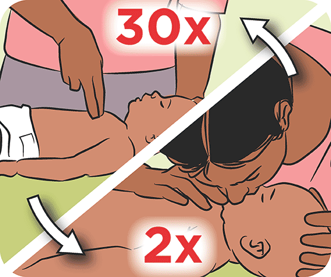

Work on progress
Mind TRAINING
BE READY AND BE TRAINED
Recently available classes
Physical Class
Virtual Class
Location of classes
Kathmandu
Bhaktapur
Lalitpur
Kavre
Dhading
Pokhara
Nepaljung
How is CPR perfored in emergency case
Training video of CPR

What is CPR
CPR (short for cardiopulmonary resuscitation) is a first aid technique
that can be used if someone is not breathing properly or if their heart
has stopped. CPR is a skill that everyone can learn you don't need to
be a health professional to do it.
1. Asses the suitation:
- Ensure the safety of the environment and check for any potential hazards.
- Assess the person's responsiveness by tapping their shoulder and shouting, "Are you okay?" If there is no response, the person may need CPR.
2. Activate Emergency Services:
- If you're alone, call for emergency medical help (911 or your local emergency number) before starting CPR. If others are present, direct someone to call for help.
3. Check for Breathing:
- Position the person on their back on a firm surface.
- Check for breathing. Look for chest rise and fall, listen for breath sounds, and feel for air movement. If the person is not breathing or only gasping, begin CPR.
4. Perform Chest Compressions:
- Kneel beside the person and place the heel of one hand on the center of the chest, just below the nipple line.
- Place the other hand on top of the first hand and interlock the fingers.
- Position yourself with straight arms, shoulders directly above your hands, and use your upper body weight to compress the chest.
- Perform chest compressions at a rate of 100-120 compressions per minute, allowing the chest to recoil completely between compressions.
5. Give Rescue Breaths:
- After 30 chest compressions, open the person's airway by tilting their head backward and lifting the chin.
- Pinch the person's nose closed and give two rescue breaths. Each breath should last about one second and make the chest rise visibly.
- Continue the cycle of 30 chest compressions followed by two rescue breaths.
6. Use an Automated External Defibrillator (AED):
- If an AED is available, turn it on and follow the prompts.
- Attach the AED pads to the person's chest as directed, and follow the device's instructions for administering a shock if advised.
7. Continue CPR Until Help Arrives:
- Continue CPR until the person starts breathing on their own, emergency medical help arrives, or you are too exhausted to continue.